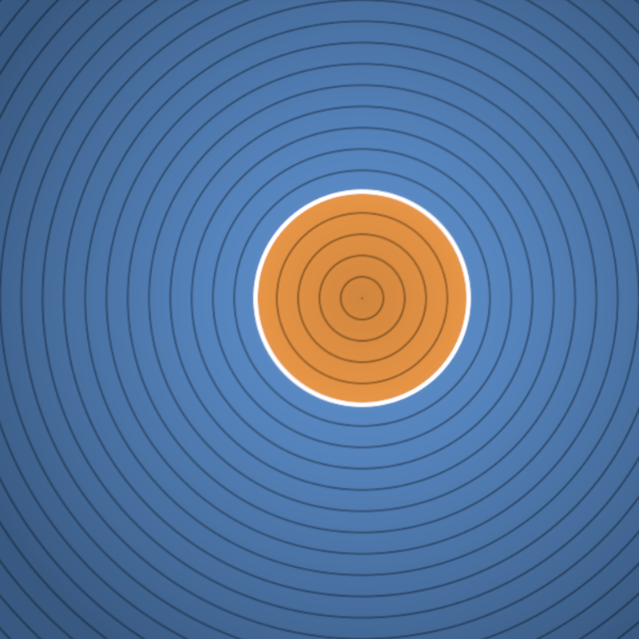
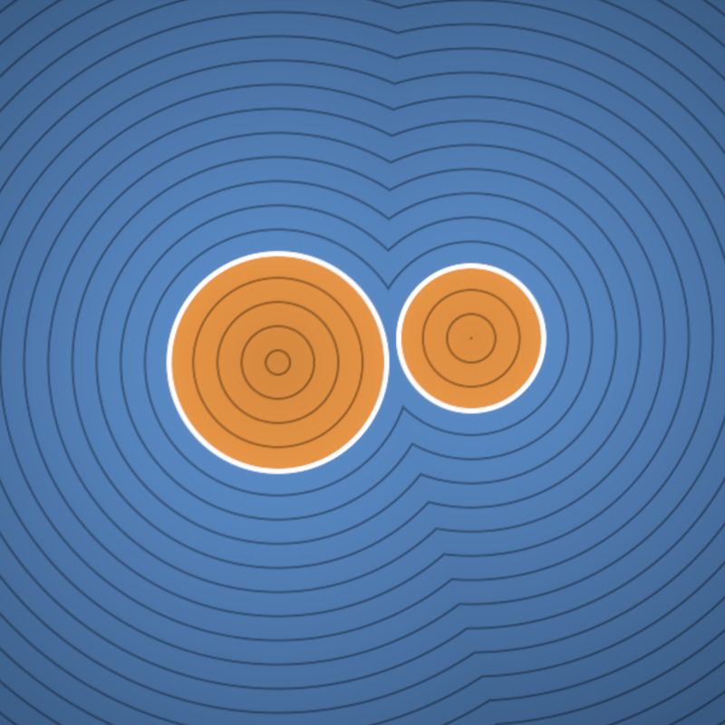
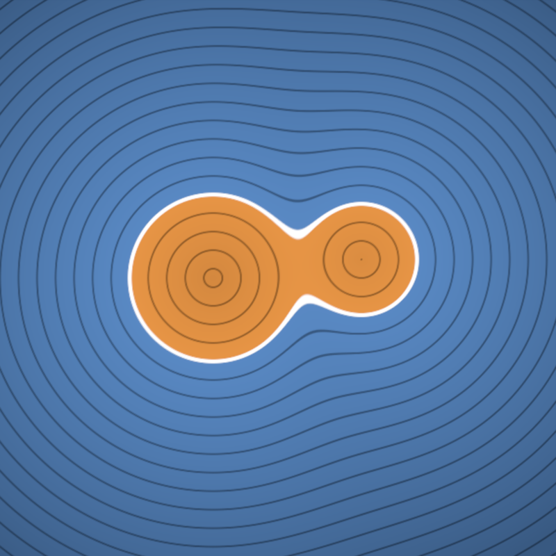
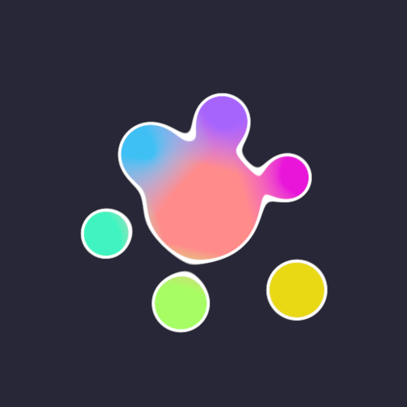
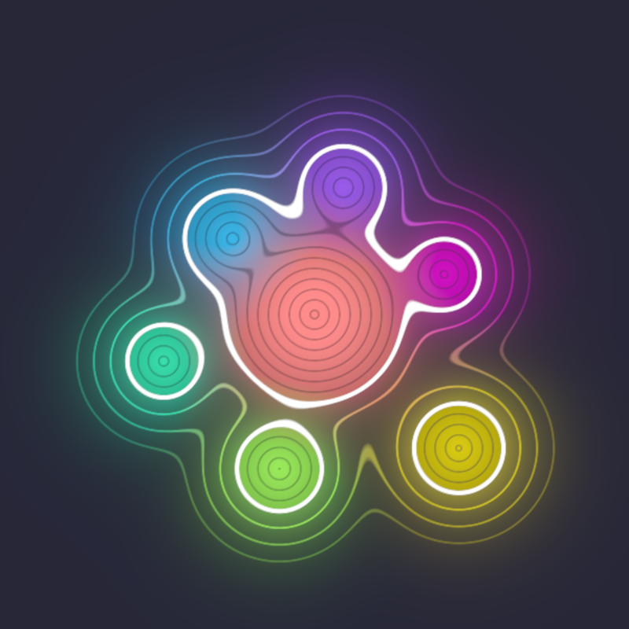
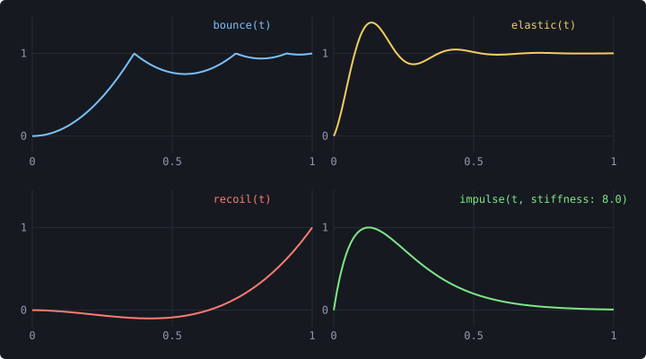
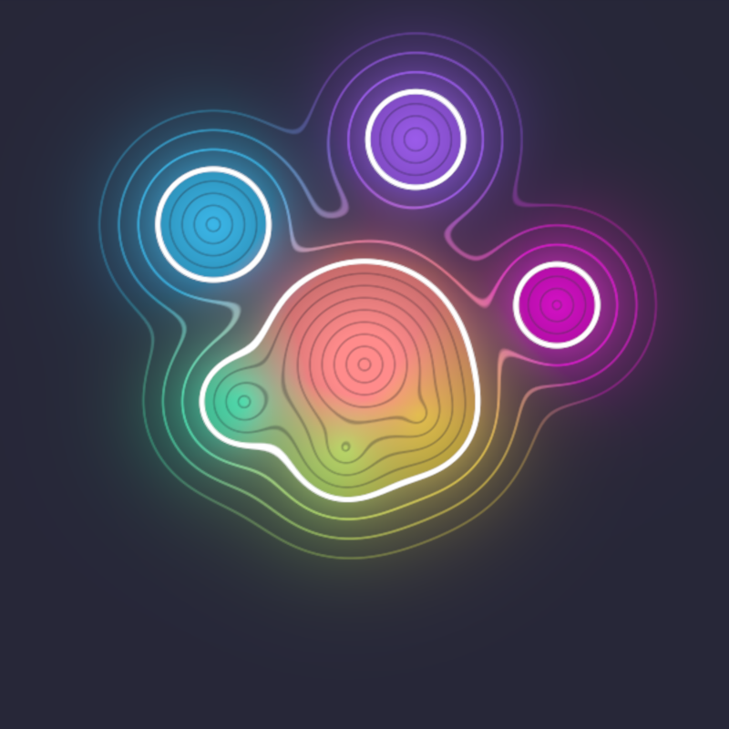

2D metaballs
Seven balls that melt into one another and pull apart again, on a beat. No mesh is drawn: every point of a canvas asks how far it is from the balls, and the picture is that one number, coloured.
This is what a signed distance field is, and once you think in distances, merging shapes, outlining them and growing them are one line each.
Everything here comes from the language and two free modules of the standard library, sdf2d and math.

Before you start
You need Blender 5 and the Base Node add-on, whose standard library holds the modules used here: sdf2d and math. Everything here is free.
Every block below is a complete .bn file, its code beside the nodes it builds. Two ways to try a step:
- Drag it. Drag the file icon of its block, or its title, onto empty space in Blender's 3D Viewport, and keep Instantiate the Example: a new object carries
metaballsat the 3D cursor. A click on the file icon downloads the file instead. - Paste it. Press the copy button of its block, open a Geometry Node editor, press Ctrl+Shift+V and pick Add as Modifier, on any mesh object: the graph makes its own canvas.
Look at the canvas from the top (7 on the numeric keypad), with the viewport in Material Preview or Rendered: its material shows the colours the graph computes, as they are.
The pictures are rendered from these exact files by render.py, with EEVEE and an orthographic camera straight down on the canvas, at frame 30.
1. The distance to a circle
A circle is usually a curve: a list of points to draw. Here it is a question asked everywhere at once: how far is this point from the edge of the circle?
For a circle of radius r centred on c, the answer is length(p − c) − r. It is negative inside, zero on the edge, positive outside, and it grows by exactly one metre for every metre you walk away from the edge. That last property is what makes it a distance field, and every step below leans on it.
step1_circle.bn: metaballs, view, canvas, Canvas
- The field.
sdf_circleof the modulemathis that formula, in the XY plane: it ignoresz. Its point isPosition() − (0.2, 0.1, 0.0): to move a shape, move the point you ask about the other way. - The canvas. A
Grid3 m wide of 600 × 600 vertices, one every 5 mm.canvasstores on each vertex the colour it is given, a field computed at that vertex's position, andCanvas, a material that only emits it, shows it. No light, no shade: the picture is the field. - The picture.
viewturns one distance into a colour. The sign picks orange or blue; the colour darkens as|d|grows, by up to 60 % at 1.5 m.sdf_isolinesofsdf2ddraws a dark line whereverdis a multiple of 10 cm, andsdf_ring_2da white line 16 mm wide wheredis 0.
Both helpers of sdf2d are themselves distance fields. sdf_ring_2d(d, thickness) is |d| − thickness / 2: negative within 8 mm of the edge. sdf_isolines is the distance to the nearest multiple of its step, less half its width. So a line is drawn the way a shape is: where its field is below 0. MapRange from 0 to 4 mm, about one pixel of the picture, softens its edge so it does not show steps.

2. Two balls: the nearest wins
With two circles, each point has two distances, a and b. The distance to the pair is the smaller one: min(a, b). This is the union of the two shapes. Nothing is drawn twice and nothing overlaps: each point simply listens to the nearer ball.
step2_union.bn: metaballs

Look at the lines between the two balls. On one side of a curve the first ball is nearer, on the other the second: there min switches from one to the other, and the lines break into a corner. The balls are 5.6 cm apart (centres 80.6 cm apart, radii 45 and 30 cm), and they stay two balls however close they come: min never makes a bridge.
3. The blob
A metaball is a ball that melts into its neighbours. Replace min with smooth_min, the Math node's Smooth Minimum, and the corner is rounded off:
step3_blob.bn: metaballs
Where a and b differ by more than melt, smooth_min is min: far from the gap, each ball keeps its own field. Where they are close, it goes below both, most where they are equal: by melt / 6 there, which render.py checks on Blender's node. With melt at 0.4 that is 6.7 cm. Midway across the gap, both balls are 2.8 cm away, and the smooth minimum is 2.8 − 6.7 = −3.9 cm: below 0, inside. The gap is filled, and the two balls are now one shape with a neck.

The thicker white at the neck is worth a look. The edge is drawn where |d| is below 8 mm, and in step 1 that was 8 mm on the canvas, as the field grew one metre per metre. In the neck the smooth minimum grows slower than that, so the same 8 mm of d covers more of the canvas. smooth_min keeps the sign right, inside is still negative, but it is no longer an exact distance near where it blends. For a picture that is harmless; for an outline of exact width, keep it in mind.
Try: set melt to 0.1: 1.7 cm is less than the 2.8 cm to fill, and the balls come apart. Set it to 1.0: one soft pebble.
4. A crowd, in colours
Seven balls now: one in the middle, six around it. Written out, that would be six smooth_min nested in one another. A repeat zone does it instead: it starts from the middle ball and melts one more ball into the field at each of its six turns.
step4_crowd.bn: metaballs, satellite, look
- Where each ball is.
satellite(i)sends balliin its own direction, 60° (1.047 rad) after the one before, at a distance between 0.5 and 1 m, with a radius between 14 and 26 cm.RandomValuewithid: igives each ball its own numbers, the same at every point and on every run; its two seeds keep the distance and the radius apart. - Melting it in. The zone carries
d, the field of the balls so far, and folds each new one in withsmooth_min(d, d_ball, melt). The order does not matter much: the smooth minimum is symmetrical, and blends only where two fields are close. - The colour, blended the same way.
his 1 where the crowd so far is nearer by more thanmelt, 0 where the new ball is, by as much, and goes from one to the other across the neck. Mixing the colours byhpaints each ball its own colour and blends them where they melt. The colours come frompaletteofmath, Inigo Quilez's cosine palette: one colour for each number from 0 to 1: 0 for the middle ball,(i + 1) / 7for balli.
look fills the inside with the blended colour on a dark ground and keeps the white edge. The inside is 1 − MapRange(d, −3 mm, 3 mm): 1 inside, 0 outside, with an edge one pixel or two wide.

5. Contours
A distance field holds more than one shape. d = 0 is the blob; d = 0.08 is the same blob grown by 8 cm, rounded and merged in the same way; d = −0.05 is the blob shrunk by 5 cm. Drawing several of them, as a map draws its contour lines, shows the whole field at once, and it is only a change of look:
step5_contours.bn: look, line
- Inside, a contour line every 5 cm (
sdf_isolineswithstep: 0.05), and the colour brightens towards the core: from 55 % on the edge to full 30 cm in. The lines show how the field of a small ball dissolves into the large one: inside the blob, every ball is still there. - Outside, an outline every 8 cm, fading out by 30 cm, and a glow of the blob's colour,
exp(−8 d): 35 % of the colour on the edge, half of that 9 cm out. The outlines are the grown copies of the blob: they merge sooner than the blobs themselves, and you can see the next merge coming. line(d)is the small helper of step 1, now a graph of its own: 1 where its field is below 0, fading to 0 over 4 mm.
The colour outside is the colour of the nearest ball, blended by h as inside: the field and its colour are defined at every point of the canvas, not only in the blobs.

6. Rhythm
Moving a ball changes the field, and the field does the rest: the necks form and break by themselves. What is left to choose is how each ball moves. A straight line from A to B at constant speed looks mechanical; the module math has curves that take a time t from 0 to 1 and shape it:

math this step uses, as Blender computes them: render.py evaluates the module's graphs to draw them.| Curve | What it does | The ball that uses it |
|---|---|---|
bounce | Reaches 1 and bounces back three times, each bounce smaller. | Hits the edge of its run and bounces off it. |
elastic | Overshoots, up to 1.37 at t = 0.135, and wobbles back to 1. | Springs out past its mark, then settles. |
recoil | Goes back first, down to −0.1 at t = 0.42, then forward to 1. | Sinks into the middle ball before it leaves. |
impulse | Jumps to 1 at t = 1 / stiffness, then decays slowly. | The middle ball's heartbeat. |
step6_rhythm.bn: metaballs, satellite, swing
- Time.
SceneTime().frame / beatcounts beats;fractkeeps its part after the point, atthat runs from 0 to 1 once a beat and starts again.beatis 96 frames: 4 seconds at 24 frames a second. Each ball addsi / 6to itst, so the balls leave one after another, 16 frames apart. - Out and back.
swinguses the first half oftto go out, shaped by its curve, and the second half to come back withease_in_out. It is 0 at both ends of the beat, so the loop has no jump.IndexSwitchpicks the curve of the way out bykind, andmod(i, 3)gives each curve to two of the six balls. - Distance. A ball's distance from the middle is
0.35 + 0.6 × swing: 35 cm, well inside the middle ball, when it is home, and 95 cm at the end of its run. The elastic balls go further, to 1.17 m, and the recoiling ones back to 29 cm, before they leave. - The heartbeat. The middle ball's radius grows by up to 12 %, following
impulse, run twice a beat. Withstiffness8 it peaks an eighth of the way into each half-beat, 6 frames in, and relaxes slowly: a pulse, not a sine.

Try: set beat to 48 for twice the tempo. In swing, swap ease_in_out(back) for bounce(back): the balls come home with a bounce too.
Take it to Blender
The moving blobs, in one file. Drag the card onto empty space in Blender's 3D Viewport and keep Instantiate the Example: a new object carries metaballs. Press Space to play. A click on the card downloads the file.
The steps before it, to start again from any of them:
The files, with the script that renders this page's pictures, are in examples/tutorials/metaballs_2d/.